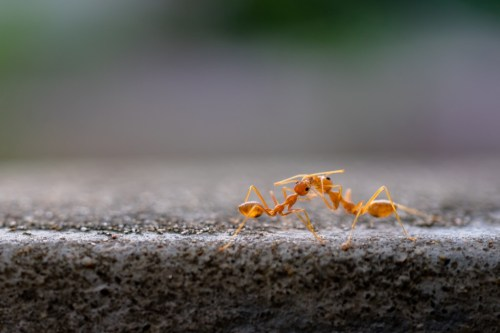

Avoid these...
Bug of the Month

Assassin Bug
Their spiny appearance can be intimidating, and for good reason. Assassin bugs, though safe to observe, should not be handled as their bites are said to be quite painful.
Bug of the Year

Red Harvester Ants
Ants are completely harmless, right? Wrong. Found in the western United States (primarily in Texas), Red harvester ants—or worker ants—are foragers with a brutal bite. Though they don't attack unless provoked, a red harvester's sting is "bold and unrelenting, like somebody using a drill to excavate your ingrown toenail," as Insect Defenses co-author Justin Schmidt explained to Travel & Leisure.